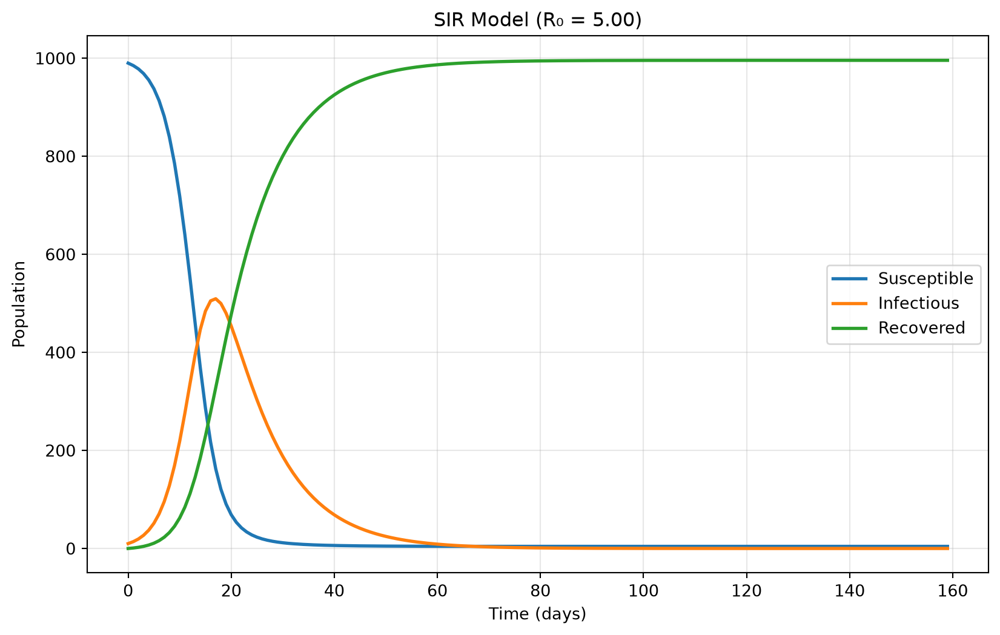
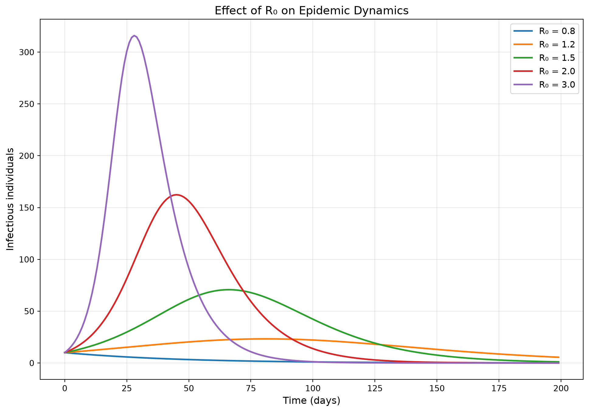
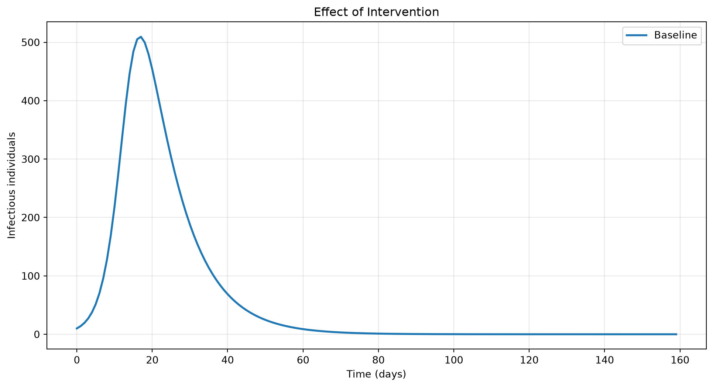
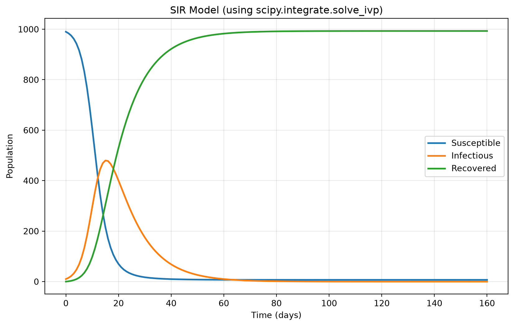

Numerical computing is the foundation of modern scientific work, data science, and computational research. From simulating disease outbreaks to modeling climate change, from analyzing financial markets to training machine learning models, nearly all quantitative work relies on efficient numerical computation.
Python has emerged as the dominant language for scientific computing, largely due to NumPy (Numerical Python). NumPy provides the fundamental building blocks:
Arrays: Efficient, homogeneous, multi-dimensional data structures
Vectorization: Operations on entire arrays without explicit loops
Mathematical functions: Comprehensive library of optimized numerical operations
Linear algebra: Matrix operations, decompositions, and solvers
Integration with other tools: NumPy arrays are the lingua franca of scientific Python
This lecture introduces NumPy through the lens of epidemic modeling. The SIR (Susceptible-Infectious-Recovered) model describes disease spread using differential equations that rarely have closed-form solutions. We need numerical methods to approximate these solutions, and NumPy makes this both possible and efficient.
Understanding NumPy is essential because:
It’s ubiquitous: pandas, matplotlib, scikit-learn, scipy, and countless other packages build on NumPy
It’s fast: NumPy operations are implemented in C and can be 10-100x faster than pure Python
It’s expressive: Vectorized code often mirrors mathematical notation closely
It scales: The same code works on arrays of any size (within memory limits)
The computational workflow we’ll develop—from mathematical model to numerical algorithm to efficient implementation—transfers to virtually any quantitative problem. Whether you’re analyzing genomes, simulating physical systems, or processing sensor data, the principles remain the same.
Beyond NumPy, we’ll briefly explore development environments. While Spyder is excellent for scientific computing, VSCode represents the industry standard for software development. Understanding both tools and when to use each is part of becoming a well-rounded computational scientist.
By the end of these notes, you’ll understand: - How NumPy arrays differ from Python lists and why it matters - How to create, manipulate, and analyze multi-dimensional arrays - How vectorization enables efficient numerical computing - How to implement numerical algorithms (particularly integration of differential equations) - How to apply these tools to real scientific problems - Best practices for numerical computing in Python
Let’s begin with the fundamental question: why do we need NumPy at all?
2. Why NumPy?
2.1 The Limitations of Python Lists
Python lists are flexible and convenient, but they have significant limitations for numerical work:
1. Performance overhead
# Python list: every element is a full Python objectpython_list = [1, 2, 3, 4, 5]# Each element carries:# - Type information# - Reference count# - The actual value# - Overhead for Python's dynamic typingimport sysprint(f"Memory for one integer: {sys.getsizeof(1)} bytes")print(f"Memory for list of 5 integers: {sys.getsizeof(python_list)} bytes")
Memory for one integer: 28 bytes
Memory for list of 5 integers: 104 bytes
Each integer object in Python takes 28 bytes (on 64-bit systems), even though the actual number might fit in 4 bytes!
2. No vectorized operations
# To add two lists elementwise, you need explicit loopslist1 = [1, 2, 3, 4, 5]list2 = [10, 20, 30, 40, 50]# This doesn't work:# result = list1 + list2 # This concatenates, doesn't add elementwise!# You must loop:result = []for i inrange(len(list1)): result.append(list1[i] + list2[i])print(result)
[11, 22, 33, 44, 55]
3. Type heterogeneity makes optimization impossible
# Python lists can contain mixed typesmixed_list = [1, "hello", 3.14, True, None]# This flexibility prevents optimization:# - Can't store contiguously in memory# - Can't use specialized instructions# - Must check type for every operation
2.2 NumPy’s Solution
NumPy solves these problems through homogeneous, contiguous arrays:
import numpy as np# NumPy array: all elements same type, stored contiguouslynumpy_array = np.array([1, 2, 3, 4, 5])# Benefits:# 1. Compact storageprint(f"Array memory: {numpy_array.nbytes} bytes") # Much smaller!# 2. Vectorized operationsarray1 = np.array([1, 2, 3, 4, 5])array2 = np.array([10, 20, 30, 40, 50])result = array1 + array2 # Works directly!print(f"Elementwise addition: {result}")# 3. Type homogeneity enables optimizationprint(f"Data type: {numpy_array.dtype}")
NumPy is typically 10-100x faster due to: - Contiguous memory: Data stored sequentially for cache efficiency - Compiled C code: Core operations implemented in C/Fortran - Vectorization: CPU can process multiple elements simultaneously (SIMD) - No Python overhead: No per-element type checking or Python function calls
2.4 When to Use Lists vs. Arrays
Use Python lists when: - You need mixed types - The data structure needs to grow/shrink frequently - You’re working with small amounts of data - You need list-specific methods (.append(), .insert(), etc.)
Use NumPy arrays when: - All elements are the same type (especially numbers) - You need mathematical operations - You’re working with large datasets - Performance matters - You’re interfacing with scientific libraries
3. Array Fundamentals
3.1 Creating Arrays
NumPy provides many ways to create arrays:
import numpy as np# From Python list or tuplearr1 = np.array([1, 2, 3, 4, 5])print(f"From list: {arr1}")# From nested lists (2D)arr2 = np.array([[1, 2, 3], [4, 5, 6]])print(f"2D array:\n{arr2}")# From nested lists (3D)arr3 = np.array([[[1, 2], [3, 4]], [[5, 6], [7, 8]]])print(f"3D array:\n{arr3}")
Every array has key attributes describing its structure:
import numpy as nparr = np.array([[1, 2, 3, 4], [5, 6, 7, 8], [9, 10, 11, 12]])# Shape: dimensions of the arrayprint(f"Shape: {arr.shape}") # (3, 4) = 3 rows, 4 columns# Ndim: number of dimensionsprint(f"Ndim: {arr.ndim}") # 2 dimensions# Size: total number of elementsprint(f"Size: {arr.size}") # 12 elements# Dtype: data type of elementsprint(f"Dtype: {arr.dtype}") # int64 (or int32 on 32-bit systems)# Itemsize: size of each element in bytesprint(f"Itemsize: {arr.itemsize} bytes") # 8 bytes for int64# Nbytes: total bytes consumedprint(f"Nbytes: {arr.nbytes} bytes") # 96 bytes = 12 elements × 8 bytes
int8 uses 1 bytes per element
int64 uses 8 bytes per element
float32 uses 4 bytes
float64 uses 8 bytes
Complex array: [1.+2.j 3.+4.j]
Boolean array: [ True False True]
Choosing the right dtype: - Use int32 or int64 for integers unless memory is critical - Use float64 (default) for most floating-point work - Use float32 for very large datasets where precision loss is acceptable - Use uint8 for image data (pixel values 0-255) - Use bool_ for boolean masks
Type promotion:
import numpy as np# When mixing types, NumPy promotes to the more general typeint_arr = np.array([1, 2, 3])float_arr = np.array([1.0, 2.0, 3.0])result = int_arr + float_arrprint(f"Result dtype: {result.dtype}") # float64# Can convert types explicitlyfloat_to_int = float_arr.astype(np.int32)print(f"Converted: {float_to_int}, dtype: {float_to_int.dtype}")
Result dtype: float64
Converted: [1 2 3], dtype: int32
4. Array Creation Methods
4.1 Arrays from Ranges
import numpy as np# arange: like Python's range()arr1 = np.arange(10) # 0 to 9print(f"arange(10): {arr1}")arr2 = np.arange(5, 15) # 5 to 14print(f"arange(5, 15): {arr2}")arr3 = np.arange(0, 1, 0.1) # Works with floats!print(f"arange(0, 1, 0.1): {arr3}")# linspace: evenly spaced points (inclusive endpoint)arr4 = np.linspace(0, 1, 11) # 11 points from 0 to 1print(f"linspace(0, 1, 11): {arr4}")# logspace: logarithmically spaced pointsarr5 = np.logspace(0, 2, 5) # 5 points from 10^0 to 10^2print(f"logspace(0, 2, 5): {arr5}")
When to use which: - arange: When you know the step size - linspace: When you know the number of points - logspace: For logarithmic scales (common in science)
4.2 Arrays of Zeros, Ones, and Constants
import numpy as np# Zeroszeros_1d = np.zeros(5)zeros_2d = np.zeros((3, 4)) # Note: shape is a tuple!print(f"Zeros 1D: {zeros_1d}")print(f"Zeros 2D:\n{zeros_2d}")# Onesones_1d = np.ones(5)ones_2d = np.ones((2, 3))print(f"Ones 2D:\n{ones_2d}")# Full: filled with a specific valuefull_arr = np.full((3, 3), 7)print(f"Full of 7s:\n{full_arr}")# Empty: uninitialized (faster but contains garbage)empty_arr = np.empty((2, 2)) # Don't rely on values!print(f"Empty (random garbage):\n{empty_arr}")
import numpy as np# Set seed for reproducibilitynp.random.seed(42)# Random floats in [0, 1)rand_uniform = np.random.rand(3, 3)print(f"Random uniform:\n{rand_uniform}")# Random floats from standard normal distributionrand_normal = np.random.randn(3, 3)print(f"Random normal:\n{rand_normal}")# Random integersrand_ints = np.random.randint(0, 10, size=(3, 3))print(f"Random integers 0-9:\n{rand_ints}")# Random choice from arraychoices = np.random.choice(['A', 'B', 'C'], size=10)print(f"Random choices: {choices}")# Shuffle arrayarr = np.arange(10)np.random.shuffle(arr)print(f"Shuffled: {arr}")
Why views? Memory efficiency! For large arrays, creating copies would be slow and wasteful. Views allow you to work with parts of arrays without duplication.
When does NumPy copy? - Explicit: .copy() - Fancy indexing and boolean indexing create copies - Slicing creates views
a + b: [11 22 33 44]
a - b: [ -9 -18 -27 -36]
a * b: [ 10 40 90 160]
a / b: [0.1 0.1 0.1 0.1]
a ** 2: [ 1 4 9 16]
a + 10: [11 12 13 14]
a * 2: [2 4 6 8]
6.2 Comparison Operations
import numpy as npa = np.array([1, 2, 3, 4, 5])b = np.array([5, 4, 3, 2, 1])# Elementwise comparisons return boolean arraysprint(f"a > b: {a > b}")print(f"a == 3: {a ==3}")print(f"a >= b: {a >= b}")# Check if any/all elements satisfy conditionprint(f"Any a > 4: {np.any(a >4)}")print(f"All a > 0: {np.all(a >0)}")print(f"All a > 3: {np.all(a >3)}")
a > b: [False False False True True]
a == 3: [False False True False False]
a >= b: [False False True True True]
Any a > 4: True
All a > 0: True
All a > 3: False
6.3 In-Place Operations
import numpy as nparr = np.array([1, 2, 3, 4, 5])print(f"Original: {arr}")# In-place operations modify the arrayarr +=10# Same as arr = arr + 10, but potentially faster and saves memoryprint(f"After += 10: {arr}")arr *=2print(f"After *= 2: {arr}")# Can also use methodsarr2 = np.array([1.1, 2.2, 3.3])print(f"Before: {arr2}")np.round(arr2, out=arr2) # Round in-placeprint(f"After round: {arr2}")
import numpy as np# Data: samples × featuresdata = np.array([[1, 2, 3], [4, 5, 6], [7, 8, 9]])# Calculate mean of each columnmeans = data.mean(axis=0) # Shape: (3,)print(f"Column means: {means}")# Center the datacentered = data - means # means broadcasts to (3, 3)print(f"Centered data:\n{centered}")# Verify: means should now be ~0print(f"New means: {centered.mean(axis=0)}")
import numpy as nparr = np.array([1, 2, 3, 4, 5, 6, 7, 8, 9, 10])# Basic statisticsprint(f"Sum: {np.sum(arr)}")print(f"Mean: {np.mean(arr)}")print(f"Median: {np.median(arr)}")print(f"Std: {np.std(arr)}")print(f"Var: {np.var(arr)}")print(f"Min: {np.min(arr)}")print(f"Max: {np.max(arr)}")# Index of min/maxprint(f"Argmin: {np.argmin(arr)}") # Index of minimumprint(f"Argmax: {np.argmax(arr)}") # Index of maximum
import numpy as np# Matrix multiplication: A @ B or np.matmul(A, B)A = np.array([[1, 2], [3, 4]])B = np.array([[5, 6], [7, 8]])# Matrix multiplication (NOT elementwise!)C = A @ Bprint(f"A @ B:\n{C}")# Verify dimensions: (m×n) @ (n×p) → (m×p)print(f"A shape: {A.shape}, B shape: {B.shape}, C shape: {C.shape}")# Element-wise multiplication (for comparison)elementwise = A * Bprint(f"A * B (elementwise):\n{elementwise}")
A @ B:
[[19 22]
[43 50]]
A shape: (2, 2), B shape: (2, 2), C shape: (2, 2)
A * B (elementwise):
[[ 5 12]
[21 32]]
Matrix-vector multiplication:
import numpy as npA = np.array([[1, 2, 3], [4, 5, 6]])v = np.array([10, 20, 30])result = A @ v # (2×3) @ (3,) → (2,)print(f"A @ v: {result}")
A @ v: [140 320]
10.2 Dot Product
import numpy as npa = np.array([1, 2, 3])b = np.array([4, 5, 6])# Dot product: sum of elementwise productsdot = np.dot(a, b)print(f"Dot product: {dot}") # 1*4 + 2*5 + 3*6 = 32# Alternative notationdot2 = a @ bprint(f"Using @: {dot2}")# Also works as methoddot3 = a.dot(b)print(f"Using .dot(): {dot3}")
Dot product: 32
Using @: 32
Using .dot(): 32
10.3 Matrix Transpose
import numpy as npA = np.array([[1, 2, 3], [4, 5, 6]])A_T = A.Tprint(f"A:\n{A}")print(f"A transpose:\n{A_T}")# For 1D arrays, transpose has no effectv = np.array([1, 2, 3])v_T = v.Tprint(f"v: {v}")print(f"v.T: {v_T}") # Still 1D!# To create column vector:v_col = v[:, np.newaxis]print(f"v as column:\n{v_col}")
A:
[[1 2 3]
[4 5 6]]
A transpose:
[[1 4]
[2 5]
[3 6]]
v: [1 2 3]
v.T: [1 2 3]
v as column:
[[1]
[2]
[3]]
10.4 Matrix Inverse
import numpy as npA = np.array([[1, 2], [3, 4]], dtype=float)A_inv = np.linalg.inv(A)print(f"A:\n{A}")print(f"A inverse:\n{A_inv}")# Verify: A @ A_inv should be identityidentity = A @ A_invprint(f"A @ A_inv:\n{identity}")print(f"Close to identity? {np.allclose(identity, np.eye(2))}")# Determinantdet = np.linalg.det(A)print(f"Determinant: {det}")
A:
[[1. 2.]
[3. 4.]]
A inverse:
[[-2. 1. ]
[ 1.5 -0.5]]
A @ A_inv:
[[1.0000000e+00 0.0000000e+00]
[8.8817842e-16 1.0000000e+00]]
Close to identity? True
Determinant: -2.0000000000000004
Singular matrices (non-invertible):
import numpy as npsingular = np.array([[1, 2], [2, 4]], dtype=float)det = np.linalg.det(singular)print(f"Determinant: {det}") # Very close to 0# This will raise an errortry: inv = np.linalg.inv(singular)except np.linalg.LinAlgError as e:print(f"Error: {e}")
Determinant: 0.0
Error: Singular matrix
10.5 Solving Linear Systems
For \(Ax = b\), use np.linalg.solve (more accurate than computing \(A^{-1}b\)):
Compiled code: NumPy operations run in C/Fortran, avoiding Python interpreter overhead
Loop fusion: Multiple operations can be combined into single passes
import numpy as np# Example: Normalize datadata = np.random.randn(1000000)# Non-vectorized equivalent (slow):# mean = sum(data) / len(data)# std = sqrt(sum((x - mean)**2 for x in data) / len(data))# normalized = [(x - mean) / std for x in data]# Vectorized (fast):mean = data.mean()std = data.std()normalized = (data - mean) / std# This single expression efficiently:# 1. Broadcasts mean and std# 2. Performs subtraction and division elementwise# 3. Runs in compiled code with optimal memory access
11.3 When to Vectorize
Good candidates for vectorization: - Mathematical operations on arrays - Statistical computations - Linear algebra - Element-wise transformations - Boolean operations and filtering
Cases where loops might be necessary: - Sequential dependencies (each iteration depends on previous) - Complex conditional logic that doesn’t vectorize cleanly - Very small arrays (overhead might dominate) - Operations not expressible in terms of array operations
Example with sequential dependency:
import numpy as np# Random walk: each step depends on previousn_steps =1000steps = np.random.choice([-1, 1], size=n_steps)# Can't vectorize this directly (cumsum helps though!)position = np.cumsum(steps)print(f"Final position: {position[-1]}")print(f"Trajectory (first 10): {position[:10]}")
If \(S < S^*\) (equivalently \(R_0 < 1\)): \(I\) decreases (no epidemic)
Final size relation:
At equilibrium, \(I_\infty = 0\) and: \[R_\infty = N - S_\infty\]
where \(S_\infty\) satisfies: \[\log\left(\frac{S_\infty}{S_0}\right) = -R_0\frac{R_\infty}{N}\]
This is a transcendental equation (no closed form), but shows that not everyone gets infected even in an epidemic.
13.3 Implementation
import numpy as npimport matplotlib.pyplot as pltdef sir_derivatives(t, state, beta, gamma, N):""" Compute derivatives for SIR model. Parameters: ----------- t : float Time (not used, but required for ODE solver interface) state : array [S, I, R] populations beta, gamma : float Model parameters N : float Total population Returns: -------- derivatives : array [dS/dt, dI/dt, dR/dt] """ S, I, R = state infection_rate = beta * S * I / N recovery_rate = gamma * I dS_dt =-infection_rate dI_dt = infection_rate - recovery_rate dR_dt = recovery_ratereturn np.array([dS_dt, dI_dt, dR_dt])def simulate_sir(S0, I0, R0, beta, gamma, t_max, dt):"""Simulate SIR model using Euler's method""" N = S0 + I0 + R0 n_steps =int(t_max / dt)# Initialize arrays t = np.arange(n_steps) * dt S = np.zeros(n_steps) I = np.zeros(n_steps) R = np.zeros(n_steps)# Initial conditions S[0], I[0], R[0] = S0, I0, R0# Euler integrationfor step inrange(1, n_steps): state = np.array([S[step-1], I[step-1], R[step-1]]) derivatives = sir_derivatives(t[step-1], state, beta, gamma, N) S[step] = S[step-1] + derivatives[0] * dt I[step] = I[step-1] + derivatives[1] * dt R[step] = R[step-1] + derivatives[2] * dtreturn t, S, I, R# SimulateN =1000S0, I0, R0 =990, 10, 0beta, gamma =0.5, 0.1t_max =160dt =1t, S, I, R = simulate_sir(S0, I0, R0, beta, gamma, t_max, dt)# Plotplt.figure(figsize=(10, 6))plt.plot(t, S, label='Susceptible', linewidth=2)plt.plot(t, I, label='Infectious', linewidth=2)plt.plot(t, R, label='Recovered', linewidth=2)plt.xlabel('Time (days)')plt.ylabel('Population')plt.title(f'SIR Model (R₀ = {beta/gamma:.2f})')plt.legend()plt.grid(True, alpha=0.3)plt.show()# Key statisticspeak_day = np.argmax(I)peak_infections = I[peak_day]total_infected = R[-1]attack_rate = (total_infected / N) *100print(f"R₀ = {beta/gamma:.2f}")print(f"Peak: {peak_infections:.0f} on day {peak_day}")print(f"Attack rate: {attack_rate:.1f}%")

R₀ = 5.00
Peak: 509 on day 17
Attack rate: 99.6%
13.4 Interventions and Parameter Exploration
import numpy as npimport matplotlib.pyplot as plt# Explore effect of R₀R0_values = [0.8, 1.2, 1.5, 2.0, 3.0]N =1000S0, I0, R0_initial =990, 10, 0gamma =0.1plt.figure(figsize=(12, 8))for R0 in R0_values: beta = R0 * gamma t, S, I, R = simulate_sir(S0, I0, R0_initial, beta, gamma, 200, 1) plt.plot(t, I, label=f'R₀ = {R0:.1f}', linewidth=2)plt.xlabel('Time (days)', fontsize=12)plt.ylabel('Infectious individuals', fontsize=12)plt.title('Effect of R₀ on Epidemic Dynamics', fontsize=14)plt.legend(fontsize=11)plt.grid(True, alpha=0.3)plt.show()# Intervention: reducing contactsplt.figure(figsize=(12, 6))# Baselinebeta_baseline =0.5gamma =0.1t, S, I, R = simulate_sir(990, 10, 0, beta_baseline, gamma, 160, 1)plt.plot(t, I, label='Baseline', linewidth=2)# Intervention at day 30: reduce contacts by 50%# (This requires modifying simulation to have time-varying beta)plt.xlabel('Time (days)')plt.ylabel('Infectious individuals')plt.title('Effect of Intervention')plt.legend()plt.grid(True, alpha=0.3)plt.show()


14. Numerical Stability and Best Practices
14.1 Step Size Selection
Choosing the right time step dt is crucial:
Too large: - Inaccurate results - May violate constraints (e.g., negative populations) - Numerical instability
Too small: - Slow computation - Accumulated rounding errors
Rule of thumb: For Euler’s method, dt should be much smaller than the characteristic time scale of the system.
import numpy as npimport matplotlib.pyplot as plt# Demonstrate instabilitydef sir_with_checks(S0, I0, R0, beta, gamma, t_max, dt):"""SIR with checks for negative values""" N = S0 + I0 + R0 n_steps =int(t_max / dt) t = np.arange(n_steps) * dt S = np.zeros(n_steps) I = np.zeros(n_steps) R = np.zeros(n_steps) S[0], I[0], R[0] = S0, I0, R0for step inrange(1, n_steps): state = np.array([S[step-1], I[step-1], R[step-1]]) derivs = sir_derivatives(t[step-1], state, beta, gamma, N) S[step] = S[step-1] + derivs[0] * dt I[step] = I[step-1] + derivs[1] * dt R[step] = R[step-1] + derivs[2] * dt# Check for violationsif S[step] <0or I[step] <0or R[step] <0:print(f"Warning: Negative population at step {step} (t={t[step]:.1f})")print(f"S={S[step]:.2f}, I={I[step]:.2f}, R={R[step]:.2f}")breakreturn t, S, I, R# Test with large dtprint("Testing with dt=5:")t, S, I, R = sir_with_checks(990, 10, 0, 0.5, 0.1, 100, 5)print("\nTesting with dt=1:")t, S, I, R = sir_with_checks(990, 10, 0, 0.5, 0.1, 100, 1)
Testing with dt=5:
Warning: Negative population at step 5 (t=25.0)
S=-94.87, I=646.71, R=448.16
Testing with dt=1:
14.2 Conservation Laws
For the SIR model, \(N = S + I + R\) should be constant. Check this!
import numpy as npdef sir_with_conservation_check(S0, I0, R0, beta, gamma, t_max, dt):"""SIR with conservation checking""" N = S0 + I0 + R0 t, S, I, R = simulate_sir(S0, I0, R0, beta, gamma, t_max, dt)# Check conservation total = S + I + R conservation_error = np.abs(total - N) max_error = np.max(conservation_error) mean_error = np.mean(conservation_error)print(f"Conservation check:")print(f"Max error: {max_error:.6e}")print(f"Mean error: {mean_error:.6e}")print(f"Relative error: {max_error/N:.6e}")return t, S, I, Rt, S, I, R = sir_with_conservation_check(990, 10, 0, 0.5, 0.1, 160, 1)
Conservation check:
Max error: 5.684342e-13
Mean error: 2.344791e-13
Relative error: 5.684342e-16
14.3 Using Professional Solvers
For production code, use scipy’s ODE solvers:
import numpy as npfrom scipy.integrate import solve_ivpimport matplotlib.pyplot as pltdef sir_system(t, state, beta, gamma, N):"""SIR system for scipy""" S, I, R = state infection_rate = beta * S * I / N recovery_rate = gamma * I dS =-infection_rate dI = infection_rate - recovery_rate dR = recovery_ratereturn [dS, dI, dR]# Initial conditionsN =1000state0 = [990, 10, 0] # [S0, I0, R0]beta, gamma =0.5, 0.1t_span = (0, 160)# Solve using adaptive solversolution = solve_ivp( sir_system, t_span, state0, args=(beta, gamma, N), dense_output=True, method='RK45'# 4th/5th order Runge-Kutta)# Evaluate at specific timest = np.linspace(0, 160, 161)S, I, R = solution.sol(t)# Plotplt.figure(figsize=(10, 6))plt.plot(t, S, label='Susceptible', linewidth=2)plt.plot(t, I, label='Infectious', linewidth=2)plt.plot(t, R, label='Recovered', linewidth=2)plt.xlabel('Time (days)')plt.ylabel('Population')plt.title('SIR Model (using scipy.integrate.solve_ivp)')plt.legend()plt.grid(True, alpha=0.3)plt.show()print(f"Solution successful: {solution.success}")print(f"Number of evaluations: {solution.nfev}")

Solution successful: True
Number of evaluations: 158
15. Development Environments
15.1 Spyder
Spyder (Scientific Python Development Environment) is designed for scientific computing:
Strengths: - Variable Explorer: See all variables and their values - IPython console: Interactive REPL built in - Integrated help and documentation - MATLAB-like interface (familiar to many scientists) - Great for exploratory data analysis
When to use: - Interactive scientific computing - Exploratory data analysis - Quick prototyping - When you need to inspect many variables
15.2 VSCode
Visual Studio Code is a general-purpose code editor:
Strengths: - Superior Git integration (visual diffs, staging, history) - Works with any language (Python, R, markdown, etc.) - Massive extension ecosystem - Industry-standard tool - Excellent for large projects
When to use: - Version-controlled projects - Multi-language workflows - When you need excellent Git integration - Professional software development
Setting up Python in VSCode: 1. Install Python extension (Microsoft) 2. Select interpreter (Cmd/Ctrl+Shift+P → “Python: Select Interpreter”) 3. Use interactive window (Shift+Enter on code selection)
15.3 Jupyter Notebooks
Jupyter notebooks mix code, output, and narrative text:
Strengths: - Excellent for teaching and communication - Inline plots and rich output - Can export to HTML, PDF - Good for reproducible research
When to use: - Exploratory analysis - Creating reports that mix code and narrative - Teaching and presentations - Quick experiments
Weaknesses: - Hard to version control (JSON format) - Encourages non-linear execution - Not ideal for large codebases
16. Common Pitfalls and Debugging
16.1 Array Shape Mismatches
import numpy as np# Common error: shape mismatchA = np.array([[1, 2, 3]]) # Shape (1, 3) - row vectorb = np.array([4, 5, 6]) # Shape (3,) - 1D arraytry: result = A @ b # Works!print(f"A @ b: {result}")exceptValueErroras e:print(f"Error: {e}")# But this fails:C = np.array([[1, 2], [3, 4]]) # Shape (2, 2)d = np.array([[5], [6]]) # Shape (2, 1)try: result = C + d # Works via broadcastingprint(f"C + d:\n{result}")exceptValueErroras e:print(f"Error: {e}")
import numpy as nparr = np.array([1, 2, 3, 4, 5])# Wrong: using 'and' instead of '&'try: result = arr[(arr >2) and (arr <5)]exceptValueErroras e:print(f"Error: {e}")# Correct: use '&'result = arr[(arr >2) & (arr <5)]print(f"Correct result: {result}")# Also need parentheses because of operator precedence!# This is wrong:# result = arr[arr > 2 & arr < 5] # Doesn't work as expected
Error: The truth value of an array with more than one element is ambiguous. Use a.any() or a.all()
Correct result: [3 4]
16.5 NaN and Inf Handling
import numpy as np# NaN propagatesarr = np.array([1, 2, np.nan, 4, 5])print(f"Sum: {np.sum(arr)}") # nanprint(f"Mean: {np.mean(arr)}") # nan# Use nan-safe functionsprint(f"nansum: {np.nansum(arr)}")print(f"nanmean: {np.nanmean(arr)}")# Check for NaN/Infprint(f"isnan: {np.isnan(arr)}")print(f"Any nan: {np.any(np.isnan(arr))}")# Remove NaNarr_clean = arr[~np.isnan(arr)]print(f"Clean array: {arr_clean}")
Sum: nan
Mean: nan
nansum: 12.0
nanmean: 3.0
isnan: [False False True False False]
Any nan: True
Clean array: [1. 2. 4. 5.]
17. Key Takeaways
NumPy provides efficient arrays that are the foundation for scientific Python. Arrays are homogeneous, contiguous in memory, and support vectorized operations.
Vectorization eliminates explicit loops by expressing operations on entire arrays. This is 10-100x faster than Python loops and often more readable.
Broadcasting automatically handles shape mismatches by “stretching” arrays to compatible shapes, enabling concise mathematical expressions.
Array indexing is powerful and flexible: basic indexing (slicing), boolean indexing (masks), and fancy indexing (integer arrays) each serve different purposes.
Slicing creates views, not copies for memory efficiency. Use .copy() when you need an independent array.
Universal functions (ufuncs) are vectorized operations implemented in compiled code: trigonometric, exponential, logarithmic, etc.
Aggregations reduce array dimensions: sum, mean, std, etc. can operate over all elements or along specific axes.
Linear algebra operations (@ for matrix multiplication, np.linalg module) are essential for many scientific applications.
NumPy dtypes determine precision and memory: choose int32/int64 for integers, float32/float64 for floating-point, balancing precision against memory.
Numerical integration approximates solutions to differential equations. Euler’s method is simple but low-order; use professional solvers (scipy) for production code.
The SIR model demonstrates how differential equations describe real-world dynamics. NumPy makes simulation straightforward and efficient.
Step size selection matters for accuracy and stability. Too large causes errors; too small wastes computation.
Check conservation laws and constraints (e.g., non-negative populations) to validate numerical solutions.
Development environments have different strengths: Spyder for interactive scientific computing, VSCode for version-controlled projects, Jupyter for exploratory work.
Common pitfalls: shape mismatches, copy vs. view confusion, using and/or instead of &/| on boolean arrays, NaN propagation.
Memory layout matters: C-contiguous (row-major) vs. Fortran-contiguous (column-major) affects cache performance for large arrays.
Random number generation has improved: prefer np.random.default_rng() over legacy np.random functions for new code.
18. Further Questions to Think About
Why does NumPy require homogeneous types? What would be the performance implications of allowing mixed types like Python lists?
When would you choose np.linspace over np.arange? Give an example where each is more appropriate.
How does broadcasting enable writing code that looks like mathematical notation? Find an example in scientific computing where broadcasting makes code much clearer.
Why is np.linalg.solve(A, b) better than np.linalg.inv(A) @ b? Consider both computational efficiency and numerical accuracy.
What determines whether a differential equation needs numerical solution? Can you give examples of equations that do and don’t have closed-form solutions?
How would you modify the SIR model to account for:
Vaccination?
Births and deaths?
Multiple age groups with different contact rates?
Loss of immunity over time?
What’s the relationship between \(R_0\) and epidemic dynamics? Why is \(R_0 = 1\) a critical threshold?
How would you validate an epidemic model? What data would you need, and how would you assess if the model fits reality?
When should you use Euler’s method vs. a higher-order method? What factors determine the appropriate numerical method?
How do vectorization and broadcasting relate to GPU computing? Why is NumPy’s design well-suited for acceleration?
What are the trade-offs between different IDEs (Spyder, VSCode, Jupyter)? When would you choose each for real projects?
How does NumPy’s memory layout affect performance for very large arrays? When would you consider using memory-mapped arrays?
19. Looking Ahead
Next lecture, we transition from homogeneous numerical arrays to structured, heterogeneous data with pandas.
While NumPy excels at mathematical computation, real-world data is messier: - Mixed types: Numbers, strings, dates all in one dataset - Missing values: How do we handle incomplete data? - Labels: Rows and columns have meaningful names - Relationships: Data often comes from multiple sources that need joining
Pandas provides DataFrames — think of them as supercharged spreadsheets: - Built on NumPy arrays (so we keep the speed) - Column-oriented: each column is a NumPy array - Labeled indices: refer to data by name, not just position - Rich functionality: filtering, grouping, aggregating, merging
We’ll learn to: - Read data from CSV, Excel, databases - Inspect and clean messy data - Filter rows and select columns - Transform variables - Group and aggregate - Merge datasets from multiple sources - Handle missing data properly
The SIR model connection: Instead of simulating one outbreak, we might analyze real epidemic data: daily case counts, deaths, vaccinations, by region, over time. Pandas makes this kind of structured data analysis natural.
The progression: - Lecture 1-3: Python fundamentals, control flow, functions - Lecture 4 (today): NumPy for numerical computing - Lecture 5 (next): Pandas for structured data - Future: Visualization (matplotlib), statistical modeling, machine learning
Everything we learned about NumPy—vectorization, broadcasting, indexing—carries forward. Pandas uses these concepts but adds structure and labels that make real data analysis much more intuitive.